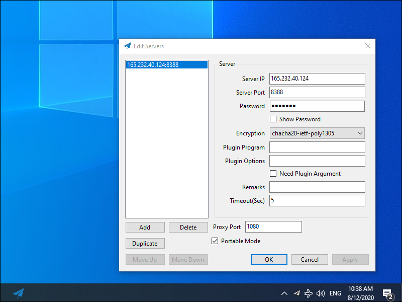
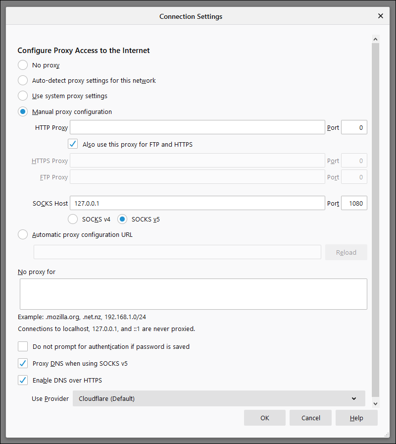
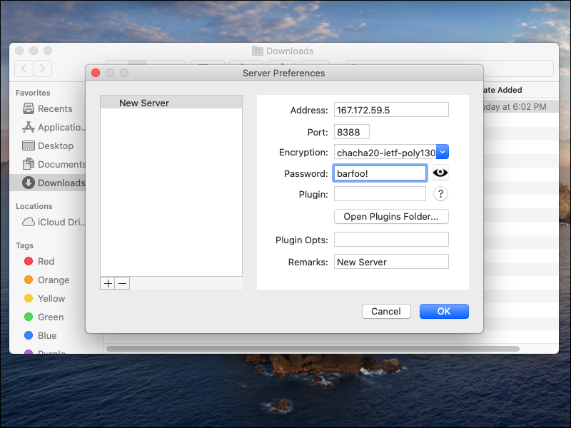

How to Install, Configure, and Run Shadowsocks-Libev
Shadowsocks is an important tool for censorship circumvention.
The original Shadowsocks was written in Python. It was created by a Chinese developer named clowwindy. In 2015 clowwindy was contacted by the Chinese police and compelled to stop working on the project.
Shadowsocks-Libev is a rewrite in pure C. It aims to be a lightweight implementation of the Shadowsocks protocol in order to keep resource usage as low as possible.
The procedures on this page were tested with Ubuntu 20.04, so they will be similar on recent versions of Debian. We also give some notes to help CentOS users. Note that CentOS 8 reaches end-of-life on December 31, 2021.
The GFW Report recommends using a random port number, an AEAD cipher, a strong password, and TCP mode only. These suggestions have been incorporated into this tutorial.
Shadowsocks-Libev receives bug fixes, but new development going forward will be in Shadowsocks-Rust.
1. Server
1.1. Generate Port Number and Password
You will need an unusual port number and a strong password for your Shadowsocks server. First generate a random port number like this:
echo $((1024 + $RANDOM))
The shell function RANDOM gives you a pseudo-random integer between 0 and 32767, so after evaluating the arithmetical expression, you will end up with a port number between 1024 and 33791. In our examples on the rest of this page, we will use the result:
5405
Also generate a random password:
openssl rand -base64 24
The openssl rand -base64 function gives you a random number, expressed in base-64 notation. Because of the argument 24, it will be based
on 24 bytes or 192 bits. The result will have 32 base-64 characters. In our examples on the rest of this page, we will use the result:
vJYEKOgxcZsgPRA4zT3L5Sdu/NCo3KWY
1.2. Open Firewall
If you have installed a firewall on your server, you need to open a port to allow Shadowsocks-Libev to receive client input. Choose the port on which
Shadowsocks-Libev will listen. Open that port for TCP and, optionally, for UDP. In the rest of this article, we’ll use 5405 as our example of a
Shadowsocks port.
If you’re using firewalld, your commands to open the port will look like this:
firewall-cmd --permanent --add-port=5405/tcp
firewall-cmd --reload
Here are the same command templates for nftables users, assuming you’re using the table inet filter and your port is
5405:
nft add rule inet filter input tcp dport 5405 counter accept
nft list ruleset > /etc/nftables.conf
Similar rules can be created for iptables users. Again, we assume you have a policy of dropping input unless it’s explicitly accepted, and we assume
you have previously installed and configured the iptables-persistent package.
iptables -A INPUT -p tcp --dport 5405 -j ACCEPT
dpkg-reconfigure iptables-persistent
For users of the ufw frontend for iptables, the equivalent command would be:
ufw allow 5405/tcp
1.3. Method #1 — Install from Repositories
Installing from the regular repositories is the easiest method of all. On Debian or Ubuntu, issue the commands:
apt update && apt upgrade -y
apt install shadowsocks-libev -y
On Ubuntu 20.04, this installs Shadowsocks-Libev version 3.3.4. The service shadowsocks-libev is already running the program ss-server,
based on the configuration file in /etc/shadowsocks-libev/config.json. Edit the configuration file:
vi /etc/shadowsocks-libev/config.json
Insert the recommended values, changing the port number and password to match your chosen values:
{
"server":["::0","0.0.0.0"],
"server_port":5405,
"encryption_method":"chacha20-ietf-poly1305",
"password":"vJYEKOgxcZsgPRA4zT3L5Sdu/NCo3KWY",
"mode":"tcp_only",
"fast_open":false
}
Write the file to disk, and quit the editor. Restart the service with your new configuration:
systemctl restart shadowsocks-libev
1.4. Method #2 — Install with Snap
Snap is already installed on Ubuntu 20.04.
On Debian, you must first install the Snap daemon:
apt update && apt upgrade -y
apt install snapd -y
For CentOS, see https://snapcraft.io/docs/installing-snap-on-centos.
Once you have the snap daemon installed, install the latest stable snap of Shadowsocks-Libev like this:
snap install core
snap install shadowsocks-libev --edge
At the time of writing, this installs Shadowsocks-Libev version 3.3.5. Edit the configuration file:
vi /var/snap/shadowsocks-libev/common/etc/shadowsocks-libev/config.json
Insert the recommended values, changing the port number and password to match your chosen values:
{
"server":["::0","0.0.0.0"],
"server_port":5405,
"encryption_method":"chacha20-ietf-poly1305",
"password":"vJYEKOgxcZsgPRA4zT3L5Sdu/NCo3KWY",
"mode":"tcp_only",
"fast_open":false
}
Write the file to disk, and quit the editor. Start the service with your configuration:
systemctl start snap.shadowsocks-libev.ss-server-daemon
1.5. Method #3 — Install with Teddysun Script
An easy way to install, configure, and run Shadowsocks-Libev in a single step is to use the Teddysun script.
On a CentOS platform, you usually have to install wget first, then download and run the script shadowsocks-libev.sh:
yum install wget -y
wget https://raw.githubusercontent.com/teddysun/shadowsocks_install/master/shadowsocks-libev.sh
chmod +x shadowsocks-libev.sh
./shadowsocks-libev.sh
On Debian and Ubuntu, the wget utility is usually already installed, so just download and run the script shadowsocks-libev-debian.sh:
wget https://raw.githubusercontent.com/teddysun/shadowsocks_install/master/shadowsocks-libev-debian.sh
chmod +x shadowsocks-libev-debian.sh
./shadowsocks-libev-debian.sh
Your run of the script will prompt you with some questions.
#############################################################
# Install Shadowsocks-libev server for Debian or Ubuntu #
# Intro: https://teddysun.com/358.html #
# Author: Teddysun <i@teddysun.com> #
# Github: https://github.com/shadowsocks/shadowsocks-libev #
#############################################################
[Info] Latest version: shadowsocks-libev-3.3.4
Please input password for shadowsocks-libev:
(Default password: teddysun.com): vJYEKOgxcZsgPRA4zT3L5Sdu/NCo3KWY
Please enter a port for shadowsocks-libev [1-65535]
(Default port: 18122):5405
Please select stream cipher for shadowsocks-libev:
1) aes-256-gcm
2) aes-192-gcm
3) aes-128-gcm
4) aes-256-ctr
5) aes-192-ctr
6) aes-128-ctr
7) aes-256-cfb
8) aes-192-cfb
9) aes-128-cfb
10) camellia-128-cfb
11) camellia-192-cfb
12) camellia-256-cfb
13) xchacha20-ietf-poly1305
14) chacha20-ietf-poly1305
15) chacha20-ietf
16) chacha20
17) salsa20
18) rc4-md5
Which cipher you'd select(Default: aes-256-gcm):14
---------------------------
cipher = chacha20-ietf-poly1305
---------------------------
Press any key to start...or press Ctrl+C to cancel
The script downloads, compiles, configures, and runs the software. The compile will take 10 minutes or so. At the end of the script, it displays some confirmation messages:
Congratulations, Shadowsocks-libev server install completed!
Your Server IP : YY.YY.YY.YY
Your Server Port : 5405
Your Password : vJYEKOgxcZsgPRA4zT3L5Sdu/NCo3KWY
Your Encryption Method: chacha20-ietf-poly1305
The script places the configuration in /etc/shadowsocks-libev/config.json. The Shadowsocks executables are in /usr/local/bin. The
executable ss-server is running in the background and listening on the specified port (5405 in our example).
Edit the configuration file:
vi /etc/shadowsocks-libev/config.json
Change the mode to TCP only, in line with the latest recommendations:
{
"server":"0.0.0.0",
"server_port":5405,
"password":"vJYEKOgxcZsgPRA4zT3L5Sdu/NCo3KWY",
"timeout":300,
"user":"nobody",
"method":"chacha20-ietf-poly1305",
"fast_open":false,
"nameserver":"1.0.0.1",
"mode":"tcp_only"
}
Write the file to disk, and quit the editor. Restart the program:
/etc/init.d/shadowsocks restart
You should see results:
Stopping Shadowsocks-libev success
Starting Shadowsocks-libev success
1.6. Method #4 — Compile from Source
If you do not want to use the automated script, you can manually compile Shadowsocks-Libev from source.
On CentOS, issue the following commands:
yum update -y
yum group install "Development Tools" -y
yum install asciidoc c-ares-devel libev-devel pcre-devel xmlto -y
yum install epel-release -y
yum install libsodium-devel mbedtls-devel -y
git clone https://github.com/shadowsocks/shadowsocks-libev.git
cd shadowsocks-libev
git submodule init && git submodule update
./autogen.sh
./configure
make
make install
On Debian or Ubuntu, issue the following commands:
apt update && apt upgrade -y
apt install build-essential autoconf automake libtool -y
apt install asciidoc libc-ares-dev libev-dev libpcre3-dev xmlto libsodium-dev libmbedtls-dev -y
git clone https://github.com/shadowsocks/shadowsocks-libev.git
cd shadowsocks-libev
git submodule init && git submodule update
./autogen.sh
./configure
make
make install
Whether on CentOS or on Debian/Ubuntu, create a defaults file named /etc/default/shadowsocks-libev. Insert the contents:
START=yes
CONFFILE="/etc/shadowsocks-libev/config.json"
DAEMON_ARGS=
USER=nobody
GROUP=nogroup
MAXFD=32768
Save the file /etc/default/shadowsocks-libev.
Copy the example systemd service file into place:
cp debian/shadowsocks-libev.service /usr/lib/systemd/system
Now edit the file /usr/lib/systemd/system/shadowsocks-libev.service. The binaries are expected to be in /usr/bin, but we have installed
them to /usr/local/bin. Therefore substitute this into the existing ExecStart line so that it reads:
ExecStart=/usr/local/bin/ss-server -c $CONFFILE $DAEMON_ARGS
Save the systemd service file /usr/lib/systemd/system/shadowsocks-libev.service.
Issue the command:
systemctl daemon-reload
Make a directory for your Shadowsocks-Libev configuration:
mkdir /etc/shadowsocks-libev
Create a file /etc/shadowsocks-libev/config.json. Here is a model you can adapt to your purposes. This configuration accepts TCP only and listens on
port 5405. Change the sample values to your own choices.
{
"server":["::0","0.0.0.0"],
"server_port":5405,
"encryption_method":"chacha20-ietf-poly1305",
"password":"vJYEKOgxcZsgPRA4zT3L5Sdu/NCo3KWY",
"mode":"tcp_only",
"fast_open":false
}
Once you have finished editing, save the file /etc/shadowsocks-libev/config.json.
Start Shadowsocks-Libev after every reboot, and also start it right now:
systemctl enable shadowsocks-libev
systemctl start shadowsocks-libev
Check that Shadowsocks-Libev is active and running:
systemctl status shadowsocks-libev
Check that Shadowsocks-Libev is listening on the expected port:
ss -tulpn | grep 5405
2. Clients
2.1. Client Availability
Shadowsocks clients are available for Linux, Windows, macOS, Android, iOS, and OpenWRT. The Shadowsocks clients page provides an overview. We will go into more details in the sections that follow.
2.2. Linux Client
You can install Shadowsocks from the repositories, with snap, or compile from source, in the same way as you did for the server.
If you install the Shadowsocks-Libev package, it automatically creates a systemd service defined in /usr/lib/systemd/system/shadowsocks-libev.service
with the configuration file /etc/shadowsocks-libev/config.json. If you like, you can edit the systemd service file to use ss-local instead of
ss-server, edit the configuration file to match your server, reload systemd, and restart the service. If you do not want to use systemd, or if you did not
use the package installation method, then proceed as follows.
Create a new configuration file ~/shadowsocks-libev.json.
Insert contents modeled on the following, replacing YY.YY.YY.YY by your actual server IP address, and substituting in your actual port number and
password on the server:
{
"server": "YY.YY.YY.YY",
"server_port": 5405,
"local_address": "127.0.0.1",
"local_port":1080,
"password": "vJYEKOgxcZsgPRA4zT3L5Sdu/NCo3KWY",
"method": "chacha20-ietf-poly1305",
"timeout": 300,
"fast_open": false,
"nameserver": "1.1.1.1",
"mode": "tcp_only"
}
The parameters you choose on the client must match up with what you chose on the server.
Start the Shadowsocks-Libev client running:
ss-local -c ~/shadowsocks-libev.json &
Check that Shadowsocks-Libev is running and listening on the expected port 1080. Open a new Terminal window and issue the commands:
ps -aux | grep shadowsocks-libev
ss -tulpn | grep 1080
Open Firefox. From the hamburger menu, select Preferences > General. Scroll down to Network Settings. Click the Settings button.
- Select Manual proxy configuration.
- Enter SOCKS Host
127.0.0.1. - Enter Port
1080. - Select SOCKS v5.
- Check Proxy DNS when using SOCKS v5.
- Click OK.
Check the end-to-end functionality to confirm that Shadowsocks-Libev and Firefox are configured correctly. With Shadowsocks-Libev still running, and Firefox proxied, visit one or more of these sites:
In all cases, you should see the IP address of the server, not your local client.
The IP Location site displays geolocation data from four databases (IP2Location, ipinfo.io, DB-IP, and ipdata.co). Note that the four may differ due to timing delays in updating databases.
When you have finished using Shadowsocks, revert Firefox from Manual proxy configuration to Use system proxy settings.
In your Terminal window, do Ctrl+c to end the Shadowsocks-Libev process.
Alternatively, you can open a second Terminal window and identify the process id under which Shadowsocks-Libev is running:
ss -tulpn | grep 1080
Kill that process by process id. For example, if the process id is 38262:
kill 38262
2.3. Windows Client
Download and unzip the Windows client from GitHub.
Enter details which match those of the server. The screenshot below gives an example.
The Shadowsocks for Windows client continues to run in the system tray. The is the area on the right side of the taskbar, toward the bottom right of your Windows desktop. Applications insert icons in the system tray to give you a quick entrance into the application. The Shadowsocks-Libev icon looks like a paper airplane. You can see it in the screenshot above. Right-click on the Shadowsocks-Libev icon to bring up the menu. The following options appear:
- System proxy
- Disable
- PAC
- Global
- Servers
- Load balance
- High availability
- Choose by statistics
- Server selection
- Edit servers
- Statistics config
- Share server config
- Scan QR code from screen
- Import URL from clipboard
- PAC
- Local PAC
- Online PAC
- Edit local PAC file
- Update local PAC from GFW list
- Edit user rule for GFW list
- Secure local PAC
- Copy local PAC URL
- Edit online PAC URL
- Forward proxy
- Start on Boot
- Allow other devices to connect
- Edit hotkeys
- Help
- Show logs
- Verbose logging
- Show plugin output
- Write translation template
- Update
- About
- Quit
Under the System proxy option, you can either disable the system proxy or set it to global. If you disable the system proxy, you must configure your individual
browser(s) to use a SOCKS5 proxy server on 127.0.0.1 port 1080.
The settings for the individual browser option are illustrated in the screenshot below:
In global mode, the Windows system proxy is changed so that all applications that use the Windows system proxy will be affected. You can see the current value of the Windows system proxy in Settings > Network & Internet > Proxy.
Proxy Automatic Configuration (PAC) configures Shadowocks to use or not use the proxy server, depending on whether the destination URL is in your PAC file.
The Load balance and High availability options will automatically switch between proxy servers.
For UDP, please use SocksCap or ProxyCap to force the program to go through the proxy server.
2.4. macOS Client
The main macOS client is ShadowsocksX-NG. It is available from GitHub.
Download the latest release, e.g. ShadowsocksX-NG.1.9.4.zip.
Launch ShadowsocksX-NG from Finder. Click Open. Enter your macOS user password, and click OK. Click the button to allow notifications.
The ShadowsocksX-NG paper airplane icon appears in the menu bar across top of screen.
Select global mode. Set up your Server Preferences on the client to match your server.
2.5. Android Client
You can get the Shadowocks for Android client from Google Play or GitHub.
On Android, Shadowsocks works more like a VPN. You don’t need to configure your browser to use a proxy server.
Note that we do not generally recommend mobile computing in environments where your security is threatened.
2.6. iOS Client
There are no free clients for iOS. Look in the iOS App Store for Shadowrocket.
Note that we do not generally recommend mobile computing in environments where your security is threatened.
3. Get Help and Report Issues
If you have informal questions about Shadowsocks, you can ask on social media platforms such as Reddit.
If you discover an issue with Shadowsocks, report it on the official GitHub issues page for the project:
下载
东京数据中心
叶光明-信仰的根基.pdf 2.2 MB
叶光明-信心之道.pdf 1.4 MB
叶光明-判断之道.pdf 1.2 MB
叶光明-十字架上的交换.pdf 944.5 kB
叶光明-圣经自修课程.pdf 1.6 MB
叶光明-在你里面的圣灵.pdf 1.1 MB
叶光明-夫父何求.pdf 1.5 MB
叶光明-孤儿寡妇.pdf 609.2 kB
叶光明-我原谅.pdf 593.1 kB
叶光明-神是媒人.pdf 1.9 MB
叶光明derekprince1.mp3 50.1 MB
叶光明derekprince2.mp3 52.5 MB
叶光明derekprince3.mp3 51.8 MB
叶光明derekprince4.mp3 52.4 MB
叶光明derekprince5.mp3 52.9 MB
叶光明derekprince6.mp3 52.7 MB
叶光明derekprince7.mp3 51.9 MB
叶光明derekprince8.mp3 52.2 MB
叶光明derekprince9.mp3 52.6 MB
叶光明derekprince10.mp3 51.8 MB
聖經-cmn-cu89s.epub 1.8 MB
聖經-cmn-ncvs.epub 1.7 MB
聖經-CNET_S.epub 7.2 MB
聖經-CUV-S.epub 2.4 MB
香港数据中心
叶光明-信仰的根基.pdf 2.2 MB
叶光明-信心之道.pdf 1.4 MB
叶光明-判断之道.pdf 1.2 MB
叶光明-十字架上的交换.pdf 944.5 kB
叶光明-圣经自修课程.pdf 1.6 MB
叶光明-在你里面的圣灵.pdf 1.1 MB
叶光明-夫父何求.pdf 1.5 MB
叶光明-孤儿寡妇.pdf 609.2 kB
叶光明-我原谅.pdf 593.1 kB
叶光明-神是媒人.pdf 1.9 MB
叶光明derekprince1.mp3 50.1 MB
叶光明derekprince2.mp3 52.5 MB
叶光明derekprince3.mp3 51.8 MB
叶光明derekprince4.mp3 52.4 MB
叶光明derekprince5.mp3 52.9 MB
叶光明derekprince6.mp3 52.7 MB
叶光明derekprince7.mp3 51.9 MB
叶光明derekprince8.mp3 52.2 MB
叶光明derekprince9.mp3 52.6 MB
叶光明derekprince10.mp3 51.8 MB
聖經-cmn-cu89s.epub 1.8 MB
聖經-cmn-ncvs.epub 1.7 MB
聖經-CNET_S.epub 7.2 MB
聖經-CUV-S.epub 2.4 MB
Updated 2022-02-08